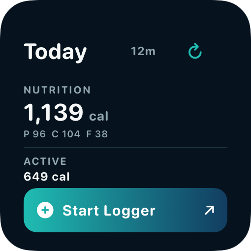
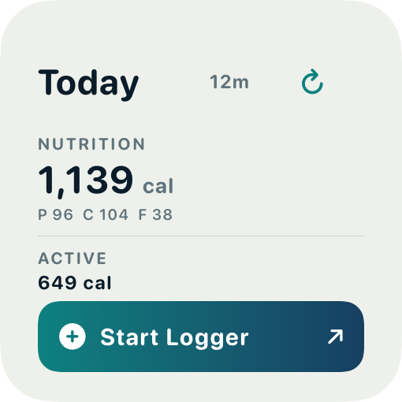
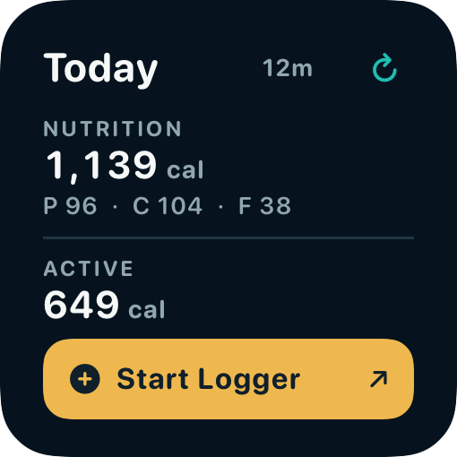
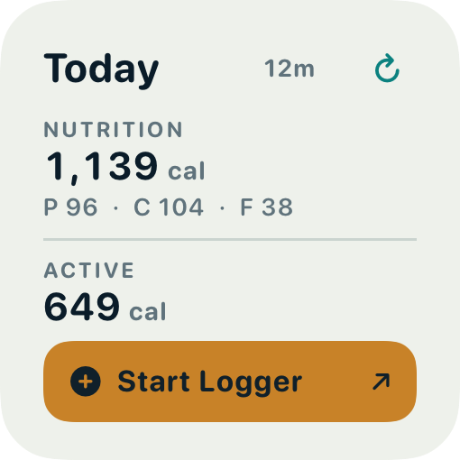
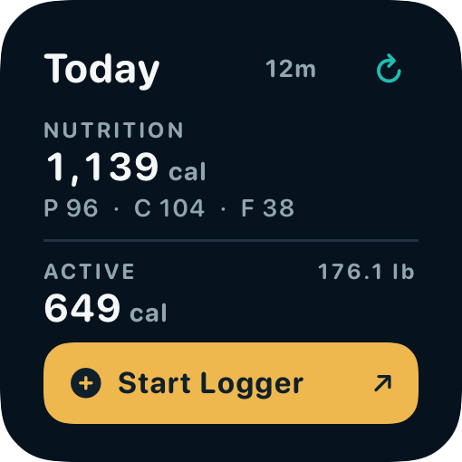
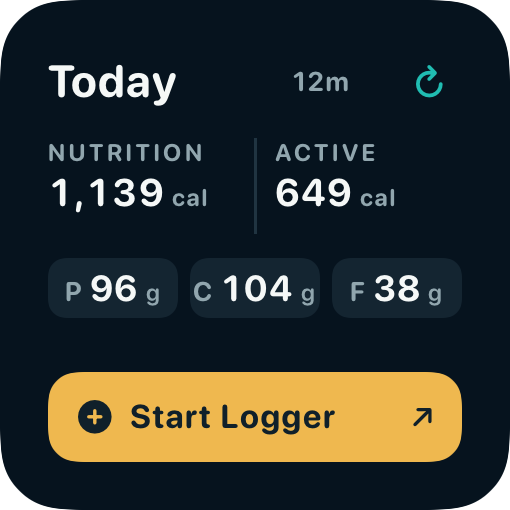
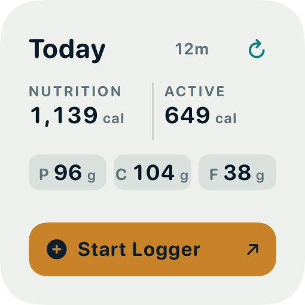
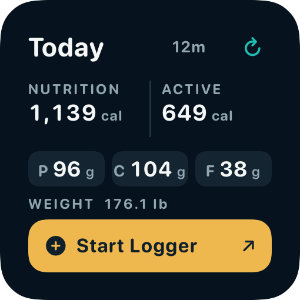
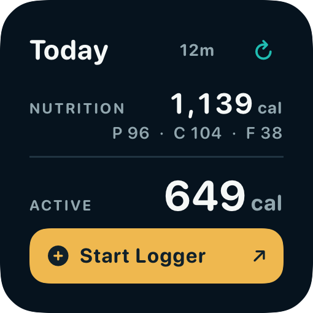
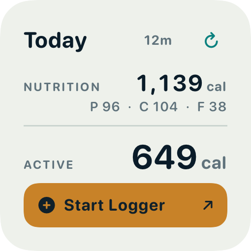

Today widget — design options (systemSmall)
Design only. Same ImageRenderer harness as the shipping widget PNGs (170 × 170 pt, 16 pt margins, 3×); not WidgetKit Home Screen screenshots. Nutrition 1,139 / Active 649 / 12m from the Founder's report; macros illustrative.
| Dark | Mineral Light | Dark · with weight | |
|---|---|---|---|
| Current (shipping) |  |  | |
| A — Balanced stack |  |  |  |
| B — Two columns (recommended) |  |  |  |
| C — Refined ledger |  |  |